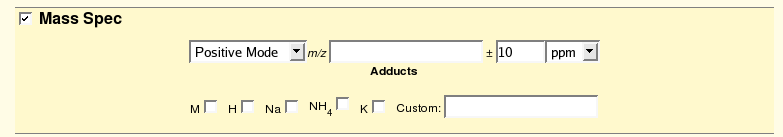
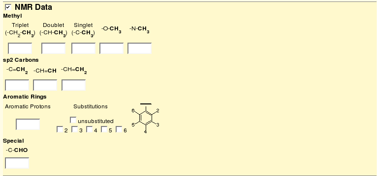

The ability to quickly identify known compounds, a.k.a. dereplication, is a very important part of natural product research. To aid this process CYANOS has two chemical search engines that can allow one to search for compounds within the CYANOS database. The dereplication search engines are available via the menu Samples > Dereplication
The Mass Spectrometric (MS) search engine, shown above, allows a user to search for compounds based upon observed MS data. The search engine allows one to submit an observed m/z value, the polarity, an acceptable error range (Da or ppm), and list of possible adducts. The search engine will then query the database for compounds using the stored monoisotopic mass of each compound.

Return to table of contentsThe 1H NMR search engine allows one to utilize key 1H NMR patterns to find compounds. For this search engine, one would conduct a brief survey of a 1H NMR spectrum to determine the number and type of methyl signals, e.g. triplet, doublet, singlet, OMe, or NMe, protons attached to sp2 carbons, the number of aromatic protons and related substitution pattern.

Return to table of contents